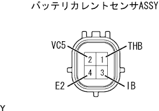

Battery Current Sensor Assembly (2GR-FE) Inspection |
| 1. Battery Current Sensor Assembly Inspection |
 |
Battery Current Sensor
Using SST (Toyota electrical tester), inspect the resistance between each terminal.
| Tester Connection Tester positive - Tester negative | Condition | Standard |
|---|---|---|
| 2(VC5) - 4(E2) | Always | 3 to 10 KΩ |
| 2(VC5) - 3(IB) | Always | 0.5 kΩ or less |
| 3(IB) - 4(E2) | Always | 3 to 10 KΩ |
Resistance Inspection (Battery Thermometer Sensor)
Using SST (Toyota electrical tester), inspect the resistance between terminals 1 (Temp) - 4 (GND).
| Tester Connection | Condition | Standard |
|---|---|---|
| 1(THB) - 4(GND) | 25°C | 1.9 to 2.1KΩ |